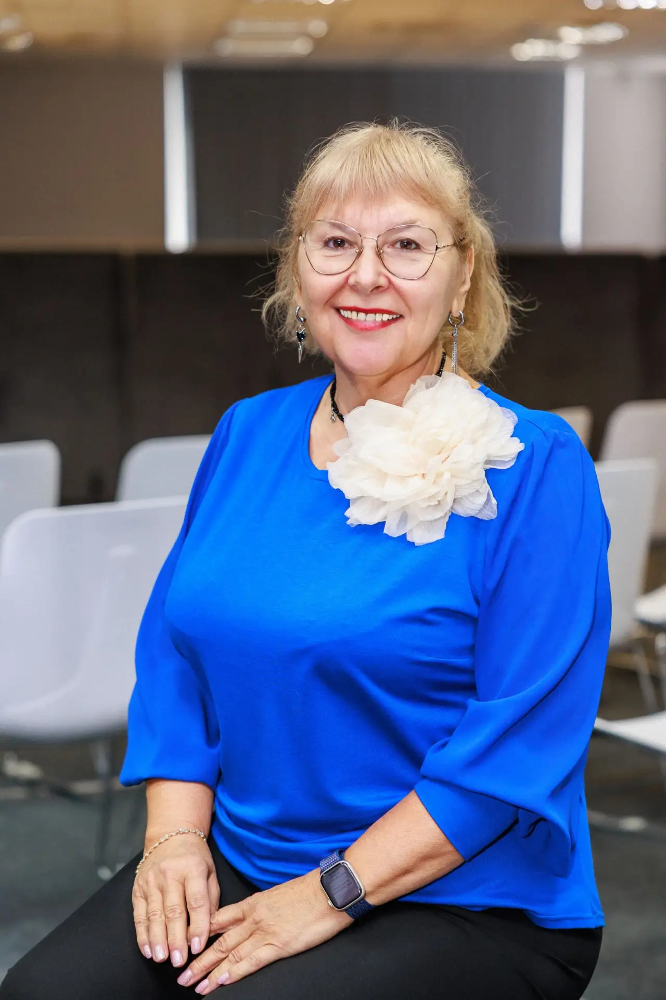
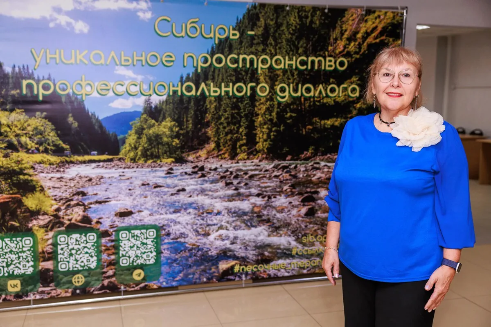
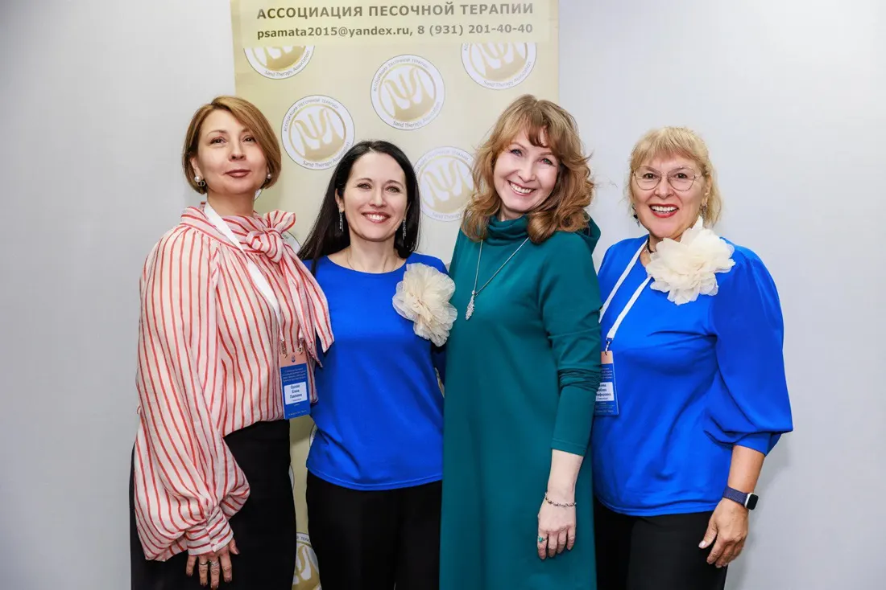
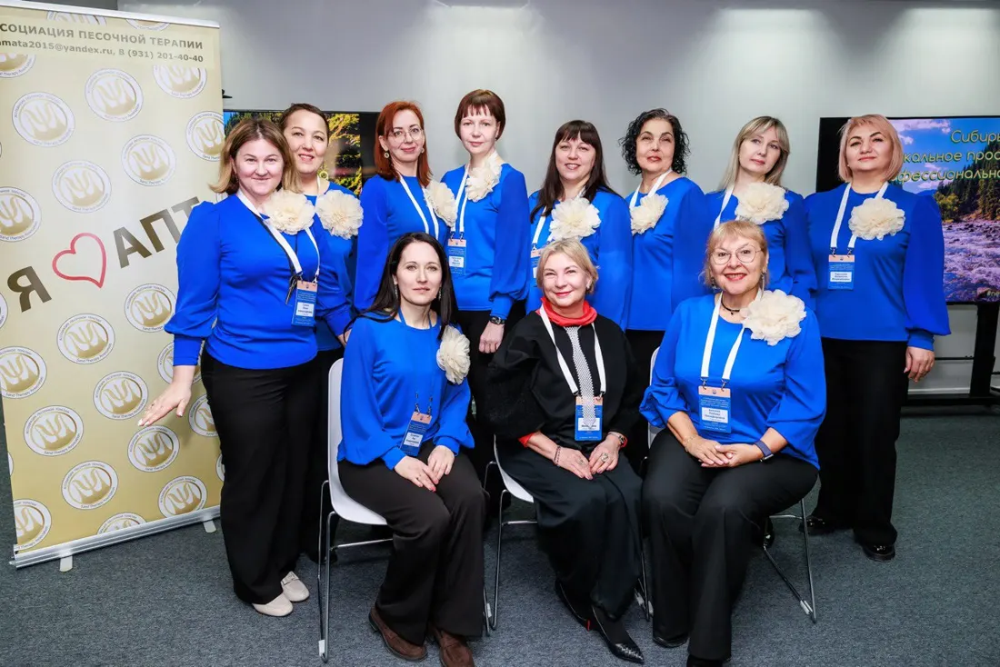
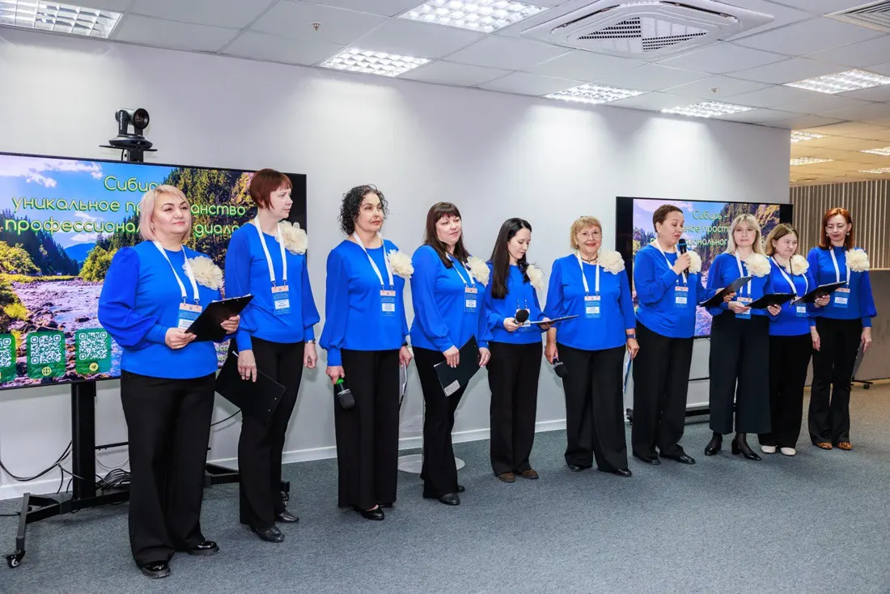

Обо мне

Меня зовут Любава Никифоровна Князева. Я психолог, психотравматолог и специалист в области юнгианской песочной терапии, работаю в Новосибирске и дистанционно уже много лет.
За это время я прошла путь от классического психологического образования до узкой специализации в песочной терапии и работе с психологической травмой — и продолжаю учиться до сих пор, потому что метод и подход к клиенту не стоят на месте. Помимо частной практики, я — официальный преподаватель международного уровня ОППЛ (Общероссийская Профессиональная Психотерапевтическая Лига) и автор сертифицированной программы Ассоциации песочной терапии «Песочная терапия как инструмент жизненных изменений. Базовый курс плюс», по которой обучаю других специалистов.
Я аккредитованный специалист «Союза психотерапевтов и психологов», аккредитованный личный терапевт и супервизор ОППЛ и АПТ, действительный член Профессиональной Психотерапевтической Лиги. Руковожу Новосибирским представительством Ассоциации песочной терапии (АПТ), вхожу в Совет АПТ и состою в Евразийской федерации центров песочной психотерапии и тренинга. Для меня это не просто строчки в дипломе, а постоянная включённость в профессиональное сообщество: я сама прохожу супервизии, личную терапию и обучение — и требую того же от себя как от практикующего специалиста.
В работе с клиентами я придерживаюсь полимодального подхода: беру то, что действительно помогает конкретному человеку, а не подгоняю запрос под один метод. Одинаково много работаю и со взрослыми, и с детьми, и с пожилыми людьми — индивидуально и в формате семейных консультаций, очно в Новосибирске и онлайн для тех, кто живёт в другом городе.




Образование и квалификация
Базовое образование и документы
Диплом психолога, преподавателя психологии (ВСА 0932387), аккредитация специалиста «Союза психотерапевтов и психологов» (удостоверение № 0265-2/24), удостоверение обучающего личного терапевта (ПК-10/77 № 000289).
Семейная и системная психотерапия
«Системная семейная терапия: классика и современность» (Институт практической психологии IPPSY); основные техники семейной психотерапии и диагностика семейной системы через песочницу (МИПОПП, Золотарева А., Санкт-Петербург); системная семейная психотерапия (Институт консультирования).
Работа с травмой и ПТСР
Психологическая помощь вернувшимся из зоны боевых действий и их семьям (МИПОПП); психология и психотерапия ПТСР (А. Флеер, Новосибирск); работа с шоковой травмой и ПТСР по методу Питера Левина (Галит Серебренник-Хай, Израиль); работа с психологической травмой и трансформация родовых негативных сценариев (под руководством Мищенко Е.).
Песочная терапия — от детской до взрослой практики
Песочная терапия Юнга для детей от перинатального до юношеского возраста и психосоматика (Мищенко Е.); плассотерапия, несколько ступеней (Старостин О.А.); работа с детско-родительской песочницей (Яшагина И.М.); эмоциональный интеллект в сказочной песочной терапии и практикум консультирования (Грабенко Т.М., Санкт-Петербург); экзамен по присвоению опыта в песочной терапии (Сакович Н., Санкт-Петербург); интегративная динамическая песочная терапия (Алисова Оксана, Ростов-на-Дону); песочная терапия (Галина Эль, Санкт-Петербург).
Дополнительные подходы
Ведение индивидуальной и групповой личной терапии для помогающих профессий (1-й Университет им. В.В. Макарова, Москва); гештальт-терапия (Сибирский институт психологического консультирования); телесно-ориентированная психотерапия (Новосибирский институт клинической психологии).
Профессиональная этика
Вы не услышите от меня осуждения, каким бы ни был ваш запрос.
Решения ищем исходя из вашей жизни, а не моих представлений о правильном.
Всё, что происходит на консультации, остаётся между нами.
Это касается и меня, и вас: так работа остаётся безопасной для обеих сторон.
Вы не пассивный слушатель, а активный участник своей терапии.
Готовы поговорить о своём запросе?
Расскажите в двух словах, что вас привело — и я предложу удобный формат и время встречи.
Записаться на консультацию